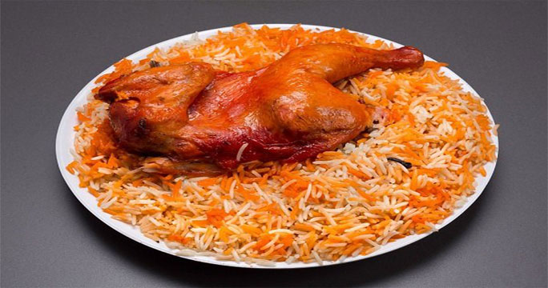

المندي

ما هو المندي ؟
مندي من أشهر الأطباق في المطبخ العربي اليمني و انتشر بعدها في الكثير من الدول العربية مثل الأردن
ومصر وفلسطين ودول الخليج هو عبارة عن أحد أصناف اللحم المتبلة مسبقاً سواء دجاج أو لحم أحمر
ويتم وضعها فوق الأرز ثم تتم التسوية في الفرن مخصوص تحت الأرض ولكن يمكنك أيضا تحضيره في
المنزل بطريقة سهلة وشهية جداً تعرفي إليها خطوة بخطوة
مكونات تحضير المندى
- الدجاج : دجاجتان
- حبة طماطم كبيرة
- حبة جزر واحدة
- بصلة كبيرة
- فصّان ثوم مهروس
- ملح و فلفل أسود
- ملعقة صغيرة كمون
- فصوص حبهان أو هيل
- ورقتين من ورق غار
- حبة ليمون جاف لومي
- عود قرفة صغير
- معلقة صغيرة قرنفل
- مكعب مرق دجاج
- لون الطعام البرتقالي او الزعفران
- كيلوغرام ارز بسمتي (4 كوب أرز)
- ملعقة كبيرة بودرة الثوم
- ملعقة كبيرة من مسحوق الزنجبيل المطحون
طريقة عمل المندي
- أولا قومي بغسل و تنظيف الدجاج جيداً بالملح والخل قم نقوم بتقطيع كل دجاجة إلى أرباع ننصحك بعمل شقوق في الدجاج لكي تنضج أسرع
- اغسلي الأرز البسمتي جيدا وانقعيه لمدة نصف ساعة
- يتم تقطيع البصل إلى مكعبات صغيرة والجزر إلى شرائح والطماطم إلى حلقات
- في قدر كبير أضيفي كمية من الزيت يتم وضع البهارات الجافة ( الليمون الجاف والحبهان – القرنفل والقرفة وورق اللورى)
- بعد أن يسخن الزيت جيداً اضيفي قطع الدجاج المقطع في الزيت على درجة حرارة مرتفعة
- أضيفي البصل والثوم والملح والفلفل الأسود وقلبي المكونات جيدًا
- بعدها أضيفي باقي الخضار ( الطماطم والجزر)
- نضيف كمية من الماء المغلي ومكعب المرق ثم نترك القدر على نار متوسطة حتى ينضج الدجاج
- في صينية فرن مناسبة لحجم الفراخ ضعي قطع الدجاج بعد تصفيتها ودهنها بلون الطعام البرتقالي مع رشة ملح وفلفل ثم أدخليها بالفرن لتكتسب تحميرة ولون لطيف
- في حلة على النار نبدأ في عمل الأرز نضع بعض الزيت ونضيف الأرز ومع الملح و الفلفل الأسود والزنجبيل الباودر او المبشور ثم اخلطي جميع المكوّنات والبهارات بعدها يتم تغطية الأرز بكمية مناسبة من المرق او بالماء الساخن ويترك على نار هادئة حتى ينضج
- وضعي قليل من لون الطعام المذاب في ماء على الأرز بشكل متعرج
- في وعاء التقديم ضعي الأرز و فوقه قطع الدجاج ثم يوضع إليه قطعة من الفحم المشتعل في ورقة قصدير ومعلقة زيت وغطي الوعاء لمدة 5 دقائق ثم قدميها واستمتعي بالطعم المدخن الرائع مثل المطاعم